Linear regression of efficiency (LRE) originated from recognition that real-time qPCR could be greatly simplified through the application of sigmoidal mathematics. Based on the ability to derive target quantity directly from individual fluorescence readings within the central region of an amplification profile, LRE provides an alternative paradigm to the relative quantification upon which current qPCR methodologies are based. A key component is adopting lambda gDNA as a universal quantitative standard, which, among other attributes, allows absolute quantification to be conducted without construction of target-specific standard curves.
Real-time PCR is based on the ability to monitor the increase in amplicon DNA within an amplification reaction, using some form of fluorescence chemistry. This in turn generates an "amplification profile" (or profile for short) in which reaction fluorescence is plotted against cycle number:
The Amplification Profile
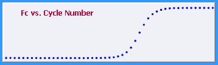
Each cycle is thus defined only by its "cycle fluorescence" (FC), which when using the fluorescent dye SYBR Green I, is proportional to the amount amplicon DNA mass present at the end of each cycle. Conventional qPCR methods determine target quantity based on the relative position of the profile. A major limitation of this approach (among many others) is that absolute quantification requires construction of target-specific standard curves.
LRE expands the capabilities of qPCR by extending data analysis beyond simple determination of profile position. This is accomplished by first determining the amplification efficiency produced during each cycle, based on the increase in amplicon DNA mass relative to the amount of amplicon DNA present at the beginning of the cycle. This of course is the amount of amplicon present at the end of the previous cycle, which is referred to as FC-1:
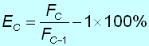
The definition of a cycle can thus expanded to include its amplification efficiency, referred to as "cycle efficiency" or EC.
The core functionality of LRE is derived from the ability to view PCR amplification not as the increase in amplicon DNA, but rather as the loss in amplification efficiency. This is done by plotting the EC of each cycle against its FC, generating what is referred to as the "LRE Plot":
The LRE Plot
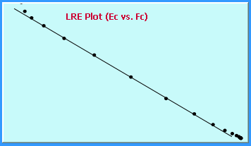
This reveals a linear relationship between amplification efficiency and the amount of amplicon DNA present at the end of a cycle. Although the mechanism of this linear coupling is unknown, this provides the ability to linearize an amplification profile, which among other attributes, allows the kinetics of amplification to be quantified, using linear regression analysis based on the equation:
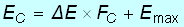
Referred to as "LRE Analysis", this generates values for the two parameters that govern PCR amplification, which are the maximal amplification efficiency (Emax) determined from the Y-intercept and the rate of loss in amplification efficiency (ΔE) determined from the slope. The cycles included into the analysis are taken from the central region of the profile, which avoids distortions caused by low reaction fluorescence in the earliest cycles, and aberrations associated with cycles within the upper region. This central region is referred as the "LRE window", which is denoted by black and red circles within the LRE and FC plots, respectively:
LRE Analysis
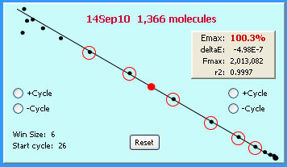
The LRE Window
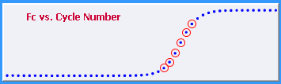
Note also that the maximal fluorescence (Fmax), which corresponds to the X-intercept within the LRE plot, can be calculated using the equation:
X-intercept
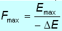
Using a derivative of the classic Boltzmann sigmoid function that has been adapted to PCR, target quantity can be determined directly from a cycle's FC:
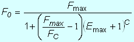
This generates the third parameter defining a cycle, which is the predicted target quantity expressed in fluorescence units and referred to as the "cycle F0". Target quantity is then derived by averaging the F0 values from all of the cycles within the LRE window, which is visual displayed in what is called the "F0 Plot":
The F0 Plot
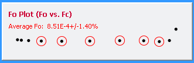
The fourth cycle parameter is the predicted FC, (pFC) calculated using a second sigmoidal derivative:
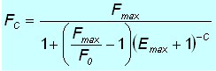
When displayed in the FC plot as circles, this allows assessment of the general conformity of the profile to the LRE model:
Adding predicted FC
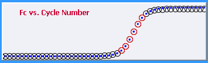
Among other attributes, this can reveal aberrant amplification kinetics, such as "plateau drift":
An example of modest Plateau Drift
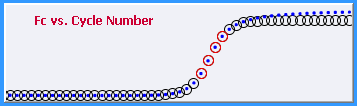
As described in more detail in the LRE Window Selection section, it is important to exclude such aberrant cycles from the analysis, as they can generate quantitative errors.
As described in the Optical Calibration overview, the final step is to convert target quantity expressed in fluorescence units (i.e. the average F0) into the number of target molecules, using an optical calibration factor (OCF) generated by amplification of a known quantity of lambda gDNA. Similar to a conventional fluorescence assay for quantifying DNA, fluorescence is converted to DNA mass (M0), that is then converted to the number of target molecules (N0) based on amplicon size (AS):
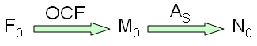
To summarize, LRE introduces a new paradigm for qPCR based on deriving the target quantity directly from the fluorescence readings within the central region of an amplification profile, in addition to expanding the definition of a cycle beyond its fluorescence readings (FC), to include cycle efficiency (EC), predicted target quantity (F0), and predicted fluorescence (pFC). In combination with adopting lambda gDNA as a universal quantitative standard, the need to construct target-specific standard curves is eliminated, making it possible to conduct large-scale absolute quantification with few resources beyond that needed for target amplification.
See also:
Introduction to the
LRE Analyzer
Implementing
LRE-based assays